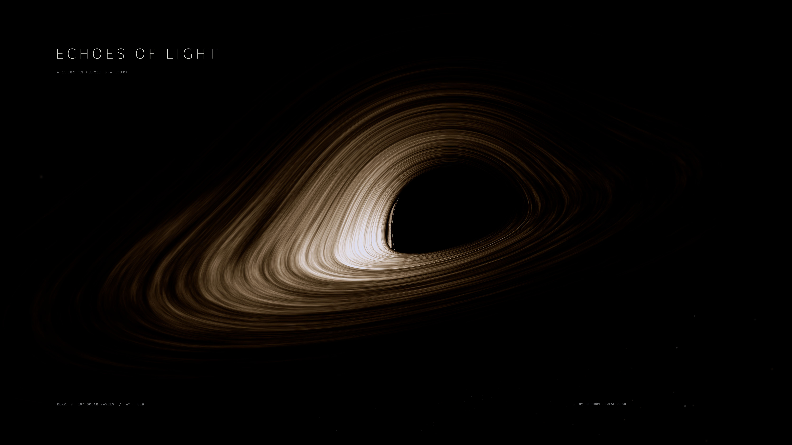
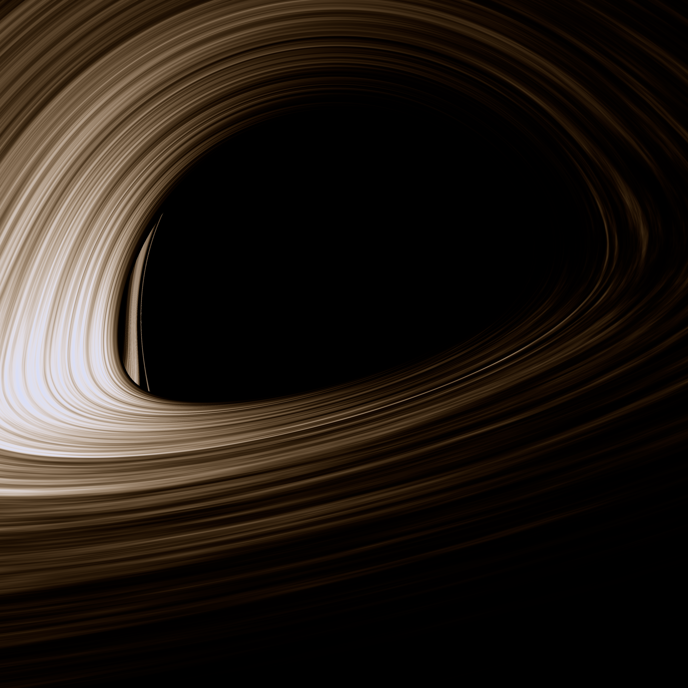

ECHOES OF LIGHT

The same light, another path
A filament returns
from an earlier moment.
Gravity carries different views of the same orbiting structure to the camera. This close view traces the scene at finer sampling, revealing the slender image beside the darkness.

Follow one material point
4.19 hours
between its images.
Both locations identify the same point carried by the bright filament. The first echo shows it at an earlier orbital position, because that light took a different path.
Material radius 5.39388 GM/c²
Frequency ratio g = 0.8944
The markers are hidden so you can inspect the light itself.
This is one observation time. These are views of the same moving material at different ages, rather than two copies of a single flash. The annotation circles are guides, not physical rings.
Open the 3,200-pixel close view ↓{kind=link}
What was calculated
The spacetime and the dark region
A 100-million-solar-mass Kerr black hole with spin a* = 0.9, viewed 15° above a prograde equatorial disk. Light paths, image displacement, azimuthal frame dragging, and frequency shifts follow that metric. The horizon lies at r = 1.43589 GM/c²; the disk begins at the ISCO, r = 2.32088 GM/c². The horizon emits nothing. The larger capture shadow is partly covered by foreground disk emission.
One opaque disk, all of its visible images
Each ray stops at the first disk surface it encounters. Every image samples the same evolving filament field at its own calculated emission time. The zero-torque Novikov–Thorne temperature profile provides the baseline; turbulent heating is procedural, not a fluid simulation. Finite disk thickness, returning radiation, scattering, and magnetic dynamics are omitted.
Why the light has these colors
This is explicitly false color: observed extreme-ultraviolet wavelengths from 21.11 to 43.33 nm are mapped to visible wavelengths by a fixed factor of 18. Blackbody spectra are shifted by the combined gravitational and Doppler factor, then integrated through a defined CIE camera response. A fixed exposure and gentle highlight compression preserve the approaching–receding asymmetry. Bloom is a restrained display approximation.
What the resolution supports
The master uses 81 million rays; this close view uses another 40.96 million. Radiance is averaged over four samples per pixel. The first echo is visible. Parts of later images approach the pixel limit, and higher orders are often only subpixel contributions. They have not been enlarged into glowing halos. All final rays resolved; sampled step-convergence, geodesic-constraint, and analytic-shadow checks passed.
Full physical assumptions and reproduction instructions · Filament correspondence · Numerical checks
Geodesic foundations: Gralla & Lupsasca. Disk flux: Page & Thorne. Color matching: Wyman, Sloan & Shirley.